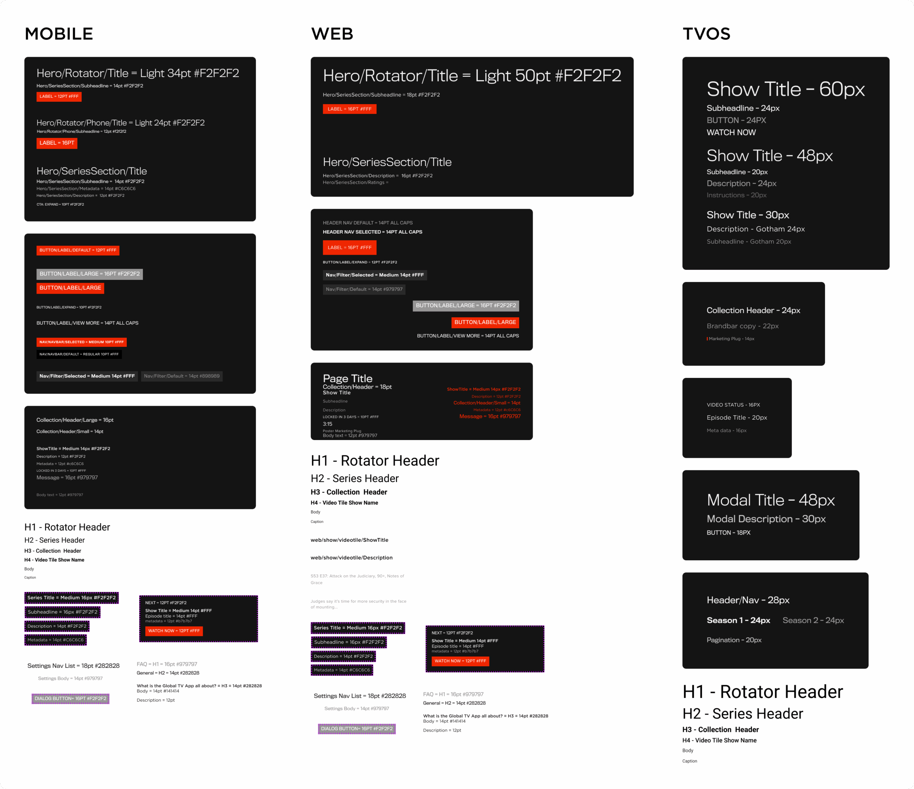
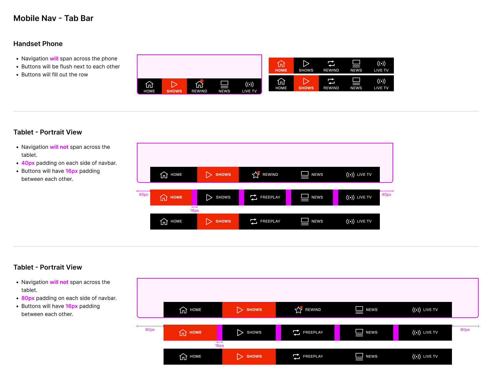

Overview
Global TV's design infrastructure had grown alongside the product — in pieces. Components lived in separate Sketch files for each platform, with no shared foundation. Colours were duplicated across files, typography wasn't standardised, and every new screen required a designer to re-solve problems that had already been solved elsewhere.
I rebuilt it from scratch in Figma — a single source of truth spanning Web, iOS, Android, and tvOS, built with Auto Layout, component variants, and design tokens. The result was a system the team could actually move with, not just reference.
Fragmented Sketch files per platform, no shared tokens, no component variants, no spacing documentation. As the team scaled, inconsistencies multiplied — components diverged across Web, iOS, Android, and tvOS with no shared source of truth to pull them back.
Full rebuild in Figma from Sketch → shared design tokens → cross-platform typography system → component library with Auto Layout and variants → pixel-accurate dev-handoff documentation for every component at every breakpoint.
The Problem
Global TV shipped across Web, iOS, Android, and tvOS — four platforms with distinct interaction conventions but a shared visual brand. Without a shared system, each platform's components evolved independently. A button that was updated on web might not make it to iOS for weeks. A colour change required four separate file updates. Spacing was at the discretion of whoever was designing that screen that day.
"How might we build a single design system that serves four platforms — consistent where it should be, platform-specific where it needs to be?"
The Sketch-era infrastructure made this hard to fix incrementally. Files weren't linked — a "system update" meant opening four separate files and making the same change in each. Design and engineering were constantly out of sync, and QA was catching visual inconsistencies that should have been impossible if the system was doing its job.
Sketch files siloed per platform — no shared components or tokens
Component states undocumented — button behaviours diverged across platforms
Typography not systematised — values hand-picked per screen rather than drawn from a shared scale
No spacing documentation — dev handoff relied on designer interpretation, not a shared spec
Foundation
Typography was the first foundation to establish. Each platform had genuine differences — a tvOS "Show Title" at 60px is semantically the same role as a mobile "Hero/Rotator/Title" at 34pt, but they serve very different viewing distances and input contexts.
I documented the full type scale for all three contexts — Mobile, Web, and tvOS — in a single reference, with exact size, weight, and colour values per role. This gave designers and engineers a shared vocabulary: "H2 – Series Header" meant the same thing regardless of which platform you were working on.

Design decision: Rather than enforcing a single global type scale across all four platforms, I accepted platform-appropriate sizing while standardising the role structure — H1 through H4, body, caption — so that semantic decisions stayed consistent even when the pixel values differed. Engineers could map our roles directly to each platform's native text style system.
Components
Each component was built in Figma with Auto Layout and complete variant sets — not just the "happy path" state, but every meaningful combination a user or developer would encounter. Navigation bars covered default, search-active, and back-button states. Buttons spanned primary, secondary, disabled, and icon variants. Tab bars included selected/unselected states for both web and mobile.
App bar (default, search, back), tab bar (web + mobile), active/inactive states per item
Primary, secondary, disabled × solo and icon variants — 8 states total, consistent across all platforms
More/Less toggles, Season selectors, Filter lists, Nav sub-items, Freeplay tooltip banners (3 variants)
Every component built with Auto Layout — label changes, icon swaps, and state transitions reflow correctly without manual adjustment.
States and sizes organised as Figma variants — designers toggle between states without leaving the frame. No more detached overrides.
Colour, spacing, and typography encoded as shared styles — a brand colour update propagates everywhere automatically, across all four platforms at once.
Dev Documentation
Components in a library only do half the job. Engineers still need to know how they behave across different contexts — and the answer is never "stretch to fit." For the mobile tab bar, the rules differed meaningfully between a handset phone and a tablet in portrait orientation.
For each component, I produced annotated specs with exact pixel values for every meaningful context — colour callouts, spacing arrows, and explicit rules for edge cases like tablet layout widths and button flush behaviour.
Mobile Tab Bar — Handset: navigation spans full width, buttons flush. Tablet Portrait (40px outer): centred, 16px between buttons. Tablet Portrait (80px outer): wider margins, same 16px inter-button rule. All three behaviours documented in a single reference.

Reflection
Building a design system is fundamentally a communication project, not a visual one. The components and tokens matter — but the decisions that determine whether a system actually gets used are the ones about how it's structured, documented, and handed over to the team using it.
The shift from Sketch to Figma wasn't just a file migration — it changed what was structurally possible. Auto Layout and component variants eliminated an entire class of problems that had been dealt with manually. Once the system was built this way, updates propagated correctly by default rather than by discipline.
Establish a contribution model — clear guidelines for when to add a new component vs. extend an existing one, and a review process that keeps the library lean. Systems without contribution governance accumulate drift over time; the variants panel becomes a graveyard of one-off states that nobody maintains.